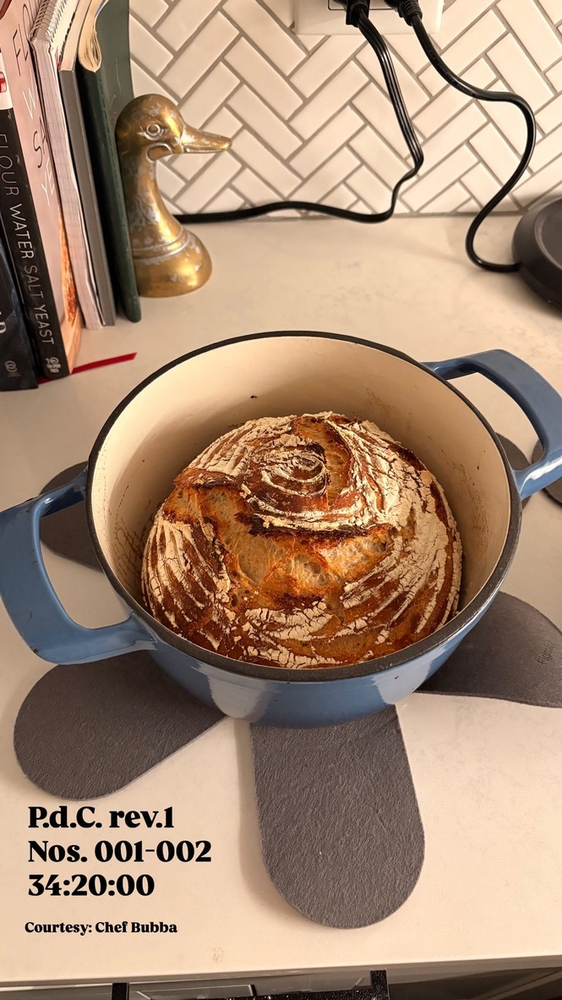

Pan du Champagne Rev 001

$15 per loaf
The five simple ingredients of water, flour, salt, yeast, and time yield a buttery, salty, and slightly tangy loaf.
Each loaf of P.d.C. takes over 24 hours to fully develop, enjoying a long first rise and carefully timed proof to ensure
that both the flavor and air content are just right.